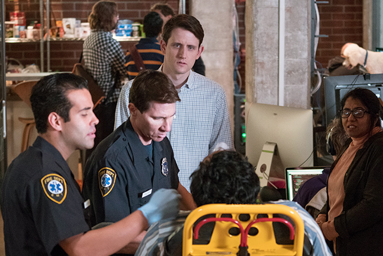

Plunge Through the Glass

Crash! Shattered glass. Screams. Chaos. Blood. Blood. Blood. A seemingly endless river of blood.
These are the sights and sounds that will haunt my dreams for years to come, the moment Richard Hendricks’s noble code sprint almost turned fatal. We all feared the worst. The near defecation, the evacuation of the stomach, the head-first dive into glass — our captain seemed to be going down the Grim Reaper’s checklist. I could hear the all-too-familiar death knell. O! I had promised myself I would die before he did.
I blame our salty-hearted crew. They arrived aboard our vessel an unruly, insolent bunch. Refusing to row in unison, demanding coffee and dogs and milliseconds. It was their mutiny that drove Richard to code himself into delirium.
Ears ringing. Flashing lights. Sirens. Tears. Blackout.
I was told that I couldn’t ride in the ambulance with Richard because the frequency of my wailing was interfering with the monitors, so I returned to the office. I expected to return to a crew of disloyal mariners, but something miraculous was happening. Harmony. With Dinesh and Gilfoyle as their coxswains, the Optimojians, the Sliceliners, and the Stallions were navigating the rapids as one. They were inspired by Richard — at long last! — and his willingness to put work before life. I could almost taste the seafoam as the hull carved through the water.
In the end, Richard’s plunge through the glass proved to be just as effective as the three-day New Employee Orientation I had planned. Who knew cleaning Richard’s blood off the back of computer monitors could be just as bonding as an office scavenger hunt or non-competitive talent show?
Now Richard is back among his crew, drinking ale on the decks (following the doctor’s orders for regular fluid intake) and letting the sea air heal his wounds (resisting my regular application of Mederma to his scars). And I? I stand by his side, hoisting the Piper Pennant on the mast once more!